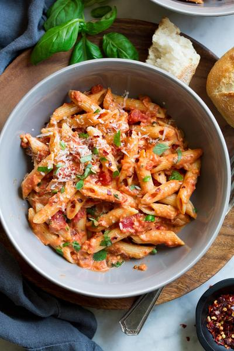

Penne alla Vodka

Description
Penne alla vodka aka penne with vodka sauce is one of the first dishes I have ever made.
It has stuck with me forever since.
Ingredients
- 1 LB Penne
- 1/4 LB Prosciutto
- 3 Cloves of Garlic, sliced thin
- 3/4 Cup Cream
- 3/4 tbsp Vodka
- 1 Can of Whole Peeled Tomatoes
- 1 teaspoon of Red Pepper Flakes
- 1 Stern of Basil
- 1/4 Cup Parsley, finely diced
- 1/2 Cup of Parmesan Cheese
- 2-3 tbsp Olive Oil
- 2 tbsp Unsalted Butter
- Salt and Pepper
Steps
- Slice up the garlic thin.
Then slice the prosciutto into little strips.
Puree your tomatoes in a food mill or a blender.
- Get a pot of salted water on the stove for the pasta and a wide-bottomed pan next to it to cook the sauce.
- In the pan, add the prosciutto and a few tablespoons of olive oil and cook over medium-high heat and cook the prosciutto until it just begins to crisp up and then add the basil and garlic.
- Turn the heat off for a minute and then add the vodka, let it sizzle and calm down. Turn the heat back on and reduce the vodka till it’s almost nothing.
- Cook the tomatoes on medium heat until it reduces and becomes very thick.
You can tell how thick it's getting by dragging a flat wooden spoon across the pan and look at how the sauce holds itself.
- Once you’ve cooked it down till most of the water is cooked out and you can see the bottom of the pan when you mix the sauce, then its time to add the cream.
Bring sauce to a simmer and cook it on a simmer for a few minutes to thicken.
- Cook the penne in salty water and once it's al dente, transfer it to the sauce and marry the sauce with the pasta.
Drop in the butter and a little pasta water to control the consistency of the sauce.
- Serve immediately with parm and fresh parsley on top.